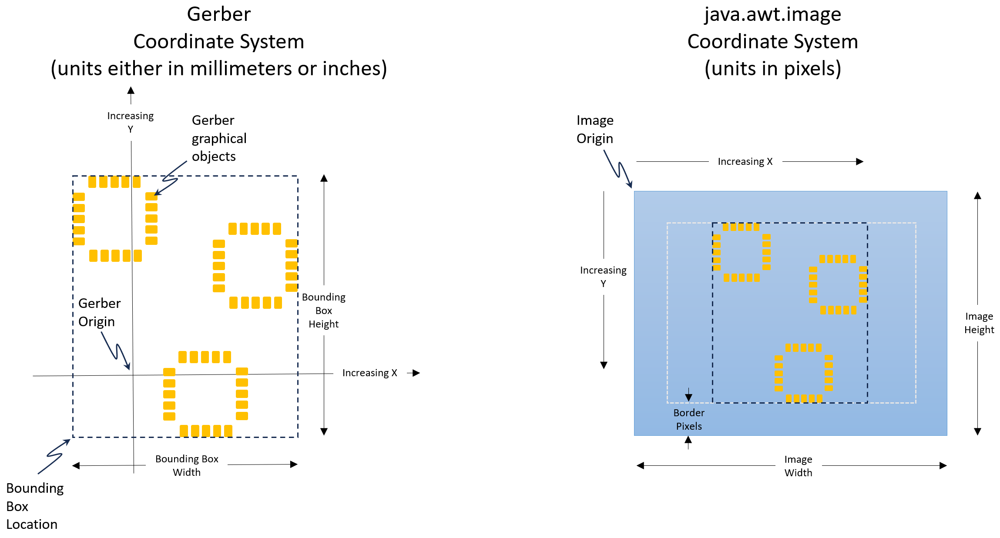

GerberFileReader simplifies the task of reading and parsing Gerber files. No special knowledge of the Gerber Layer Format syntax is necessary to use it.
GerberFileReader is intended to be fully compliant with the Gerber Layer Format Specification, v2024.05 which means it can not only read the graphical information but also the design metadata from Gerber X2 and Gerber X3 formated files.
Getting Started
The code snippet below shows how to create an instance of a GerberFileReader for reading a file named "myGerberFile.gbr" located in the current directory. This opens and attempts to read the Gerber file's header:
File gerberFile = new File("myGerberFile.gbr");
GerberFileReader gerberFileReader = new GerberFileReader(gerberFile);
When it returns, the Gerber file's attributes are available via the getFileAttributes() method and its coordinate units are available via the getUnits() method.
When an instance of a GerberFileReader is first created, only the Gerber header of the file is read - none of the graphical information that the file represents is read. The remainder of the Gerber file is read by calling its parseFile() method:
gerberFileReader.parseFile();
This will read and parse the remainer of the Gerber file on the current thread. This is appropriate for non-interactive applications where it is permisible to tie-up the current thread to perform the processing of the Gerber file. When it returns, the image graphic stream is available via the getGraphicsStream() method.
For GUI applications, GerberFileReader provides the parseFileInBackground(...) method which returns immediately to keep the Event Dispatch thread responsive to the user's GUI actions. This method starts a background SwingWorker thread that performs all the file reading and parsing. Below is an example of its use:
gerberFileReader.parseFileInBackground((p)->showProgress(p), ()->runOnSuccess(), (ex)->runOnFailure(ex)));
Here showProgress(p), runOnSuccess(), and runOnFailure(ex) are application provided methods that get called on the Event Dispatch thread so they can be used to update the GUI. The showProcess(p) method gets called periodically during the parsing process with a Double parameter that varies from 0 to 1.0. This would typically be used to update a progress bar or percent complete display. The runOnSuccess() method is only called if the Gerber file is successfully parsed. This is where the getGraphicsStream() method would typically be called to generate an image or extract other data to be displayed by the GUI. The runOnFailure(ex) method only gets called if a exception occurs during the parsing process. It gets called with an Exception parameter which may be examined to determine the exact nature of the problem and would typically display a relevant message to the user.
Image Generation
Once a Gerber file has been successfully parsed, the getGraphicsStream() method can be used to obtain the image graphics stream which contains all the information needed to create the image that the Gerber file represents.
GraphicsStream gs = gerberFileReader.getGraphicsStream();
The bounding box of all graphical objects in the graphics stream can be found using its getBounds() method.
Rectangle2D boundingBox = gs.getBounds();
As mentioned previously, the units of the coordinates of all graphical objects (and their bounding box) is either millimeters or inches depending on what is returned by the getUnits() method.
Note, as shown below, the Gerber coordinate system is different than that used by java.awt.image. The origin of the Gerber coordinate system can be located arbitrarily with respect to the graphical objects, in other words, negative coordinates are possible. However, the java.awt.image origin is always at the upper left corner of the image and everything visible in the image has positive coordinates. In addition, the direction of increasing Y coordinates is up in the Gerber coordinate system but is down in the java.aw.image coordinate system.
Assuming a java.awt.image is to be generated from the graphics stream, a mapping of Gerber coordinates to image coordinates must be performed. This will consist of a scaling and a translation such that: imageCoordinate = scaleFactor*gerberCoordinate + translation. The scaleFactor is best determined using the dimensions of the bounding box. Since the aspect ratio of the bounding box and the image are probably different, the scale factor should be computed in both the X and Y directions with the smaller of the two being used so as to insure all graphical objects fall within the image bounds. This is shown in the following code snippet:
final int BORDER_PIXELS = 20; //Keeps graphical objects away from the very edge of the image
double scaleFactor1 = (image.getWidth() - 2*BORDER_PIXELS)/boundingBox.getWidth();
double scaleFactor2 = (image.getHeight() - 2*BORDER_PIXELS)/boundingBox.getHeight();
double scaleFactor = Math.min(scaleFactor1, scaleFactor2);
This scale factor has units of image pixels per Gerber file units and can be used directly with X coordinates but must be negated for Y coordinates due to the opposite directions of the Y axis in the two coordinate systems.
The translations (one for X and one for Y) are computed by substituting a known set of Gerber coordinates and their desired image coordinates into imageCoordinate = scaleFactor*gerberCoordinate + translation and solving for the required translations (and remembering to negate the scaleFactor in the Y equations):
//Get the Gerber coordinates of the lower-left corner of the bounding box
double gerberCoordinateX = boundingBox.getX();
double gerberCoordinateY = boundingBox.getY();
//And the desired image coordinates of the lower-left corner of the bounding box
//(these will center the bounding box in the image)
double imageCoordinateX = (image.getWidth() - scaleFactor*boundingBox.getWidth())/2;
double imageCoordinateY = (image.getHeight() + scaleFactor*boundingBox.getHeight())/2;
//Solve for the required translations
double translationX = imageCoordinateX - scaleFactor*gerberCoordinateX;
double translationY = imageCoordinateY + scaleFactor*gerberCoordinateY;
The actual drawing of the image may take some time so it is best done on a background thread so as to not tie-up the event dispatch thread. The following code snippet shows how to use the scaling and translations computed above and how the polarity of each object is used to choose the color for drawing the object:
Graphics2D offScr = image.createGraphics();
offScr.setRenderingHint(RenderingHints.KEY_ANTIALIASING, RenderingHints.VALUE_ANTIALIAS_ON);
Color background = Color.BLACK;
Color foreground = Color.WHITE;
//Start by filling the entire image with the background color
offScr.setColor(background);
offScr.fillRect(0, 0, image.getWidth(), image.getHeight());
//Set the translation and scaling
offScr.translate(translationX, translationY);
offScr.scale(scaleFactor, -scaleFactor);
//Draw all the Gerber graphical objects onto the image plane in the order they appear in the
//graphics stream
for (GraphicalObject go : gs.getStream()) {
if (go.getPolarity() == Polarity.DARK) {
//Polarity DARK means the object is opaque and will cover-up anything behind it so only
//the foreground will be visible
offScr.setColor(foreground);
}
else { //Polarity.CLEAR
//Polarity CLEAR means the object is transparent and will erase any previously drawn
//objects that fall behind it so only the background will be visible
offScr.setColor(background);
}
//Draw the object by filling its area with the appropriate color
offScr.fill(go.getArea());
}
offScr.dispose();
Extracting Attributes
GerberX2 allows attributes to be attached to the Gerber file as well as to individual graphical objects generated by the file. As mentioned previously, the getFileAttributes() method can be used to obtain the attributes attached to the file. The following code snippet prints all of the file attributes:
AttributeDictionary fileAttributes = gerberFileReader.getFileAttributes();
for (String attKey : fileAttributes.keySet()) {
System.out.println(fileAttributes.get(attKey).toString());
}
To obtain the attributes attached to a graphical object use its getAttributes() method. As an example, the following code snippet prints all attributes attached to each graphical object in the graphics stream:
for (GraphicalObject go : gs.getStream()) {
AttributeDictionary attributes = go.getAttributes();
for (String attKey : attributes.keySet()) {
System.out.println(attributes.get(attKey).toString());
}
}
Often, only particular attributes with known names are needed, see section 5.6 of the Gerber Layer Format Specification for a list of standard attribute names and their values. Since the attributes are returned in an AttributeDictionary which extends java.util.HashMap, its get("<attribute name>") method can be used to extract attributes by name. For example, the code snippet below creates a partial* net-list of the design by printing a list with each line formated as <net name>, <ref des>, <pin number>:
for (GraphicalObject go : gs.getStream()) {
AttributeDictionary goAttributes = go.getAttributes();
Attribute pinAttribute = goAttributes.get(".P");
//Skip the object if it doesn't have a pin attribute
if (pinAttribute == null) {
continue;
}
Attribute netAttribute = goAttributes.get(".N");
//Skip the object if it doesn't have a net attribute, or doesn't have a net name, or has a
//net name of "N/C"
if (netAttribute == null || netAttribute.getValues().size() == 0 ||
netAttribute.getValues().get(0).equals("N/C")) {
continue;
}
System.out.println(netAttribute.getValues().get(0) + "," +
pinAttribute.getValues().get(0) + "," +
pinAttribute.getValues().get(1);
}
* A complete net-list would require combining the lists from all layers of the design. Since each Gerber file only defines a single layer, an outer enclosing loop would be required to process all of the design's Gerber files to obtain the complete net-list.
MetaData
In addition to the attributes required by the Gerber Layer Format Specification, other potentially useful information is attached to each graphical object. This can be obtained by calling its getMetaData() method.
The metadata contains stroke information that describes how the object was created. For objects created with draws and arcs, the StrokeInfo contains the path through which the aperture was stroked. For regions, the StrokeInfo contains the closed contour that encloses the region. And for flashes, the StrokeInfo contains a path consisting of a single point marking the center of the flash.
For objects that were created by a step and repeat block, the metadata contains a block repeat count that can be used to disambiguate net names and reference designators. For objects created by flashing an aperture block, the metadata contains a block Id that can be used to disambiguate net names and reference designators.
Going Further
A complete example that uses GerberFileReader for reading, parsing, and displaying Gerber files can be found here GerberViewer
| Package | Description |
|---|---|
| gerberFileReader |